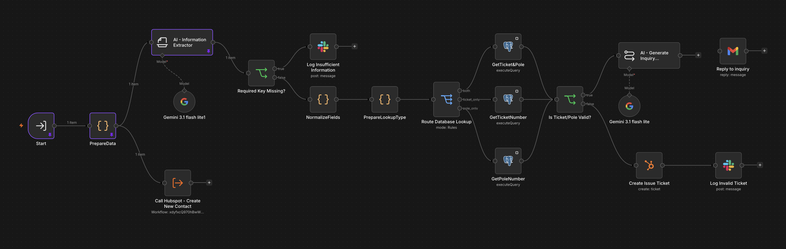

An AI-powered operations automation system for processing incoming utility-related emails. The workflow classifies requests, extracts relevant information, routes them to the appropriate process, and interacts with connected systems.

The main workflow acts as the entry point for incoming requests. It receives emails, uses AI to classify the request, and routes execution to specialized subworkflows based on the request type.
The main workflow delegates specific operations to reusable subworkflows. This keeps business logic separated and allows common operations to be reused across multiple request paths.

Handles incoming requests for information about utility tickets and related field data. The subworkflow receives structured information extracted from the original email, validates the available details, retrieves the corresponding record from the database, and uses the retrieved data to generate a contextual response. The workflow is designed to handle incomplete or ambiguous requests without relying on fabricated information. When sufficient information is available, it retrieves the relevant ticket or pole details and provides the requested information back to the contact. Contact information is also handled through a reusable contact-management component, allowing the same functionality to be shared across other request paths. By separating the inquiry logic from the main workflow, the process can be maintained independently and reused whenever a request is classified as a general inquiry.

Processes general information requests, retrieves the required data, and generates an appropriate response.

Handles correction requests by validating the submitted information, retrieving the relevant record, and processing the requested changes.

Handles safety-related requests and routes them through the appropriate process for review and response.
Incoming Email → AI Classification → Request Routing → Specialized Subworkflow → CRM / Database / Response